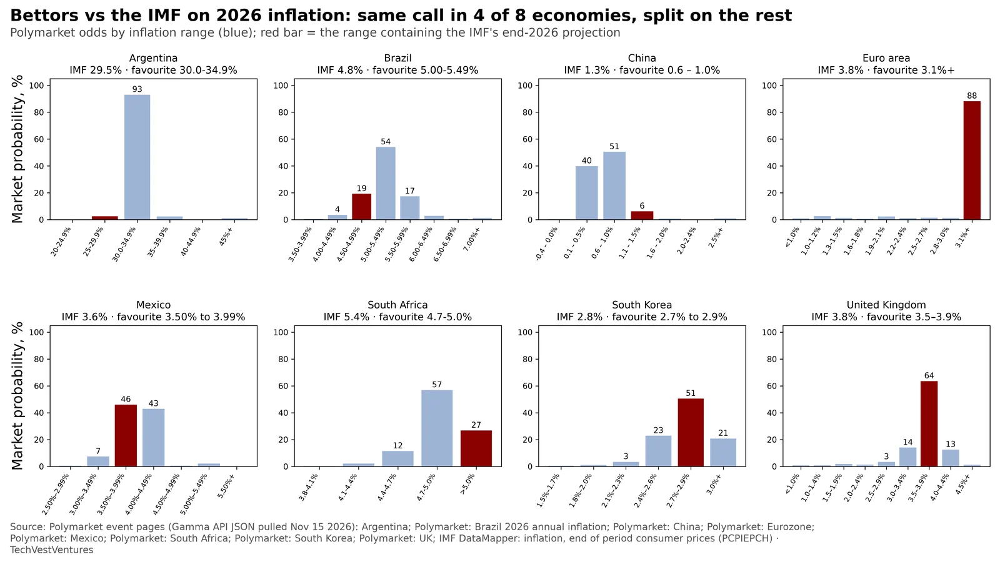

Q7. Inflation Bets

Each panel shows Polymarket's probability for every range of December-2026 year-on-year consumer-price inflation (blue bars; prices as of Nov 15 2026, normalised to sum to 100%), with the bin containing the IMF's end-2026 projection highlighted in red (IMF World Economic Outlook, end-of-period consumer prices). The market's most likely range contains the IMF figure for Euro area, Mexico, South Korea, United Kingdom. The two disagree for Argentina (IMF 29.5%, market gives that range 3%; its favourite is 30.0-34.9% at 93%); Brazil (IMF 4.8%, market gives that range 19%; its favourite is 5.00-5.49% at 54%); China (IMF 1.3%, market gives that range 6%; its favourite is 0.6 – 1.0% at 51%); South Africa (IMF 5.4%, market gives that range 27%; its favourite is 4.7-5.0% at 57%). Bettors lean hotter than the IMF in Argentina (by a hair: 29.5% sits just under the market's favoured 30–34.9% range) and Brazil, and cooler in China and South Africa. With December only weeks away, the markets can price monthly CPI data released after the IMF's projections were made.
- Argentina: IMF 29.5%; market favourite 30.0-34.9% (93%); trading volume about $101K.
- Brazil: IMF 4.8%; market favourite 5.00-5.49% (54%); trading volume about $236K.
- China: IMF 1.3%; market favourite 0.6 – 1.0% (51%); trading volume about $143K.
- Euro area: IMF 3.8%; market favourite 3.1%+ (88%); trading volume about $123K.
- Mexico: IMF 3.6%; market favourite 3.50% to 3.99% (46%); trading volume about $126K.
- South Africa: IMF 5.4%; market favourite 4.7-5.0% (57%); trading volume about $131K.
- South Korea: IMF 2.8%; market favourite 2.7% to 2.9% (51%); trading volume about $99K.
- United Kingdom: IMF 3.8%; market favourite 3.5–3.9% (64%); trading volume about $168K.
Note: Each market resolves on the official 12-month CPI change for December 2026 (INDEC, IBGE IPCA, NBS, Eurostat HICP, INEGI, Stats SA, Korea MODS, ONS). Prices are 'Yes' prices for each range and are normalised because they sum to slightly more or less than 100%. Several of these markets are thin (tens of thousands of dollars). The IMF figure is the DataMapper's current WEO vintage; the IMF projects the year-end value, matching the markets' definition.
Sources: Polymarket event pages (Gamma API JSON pulled Nov 15 2026): Argentina Polymarket: Brazil 2026 annual inflation Polymarket: China Polymarket: Eurozone Polymarket: Mexico Polymarket: South Africa Polymarket: South Korea Polymarket: UK IMF DataMapper: inflation, end of period consumer prices (PCPIEPCH)